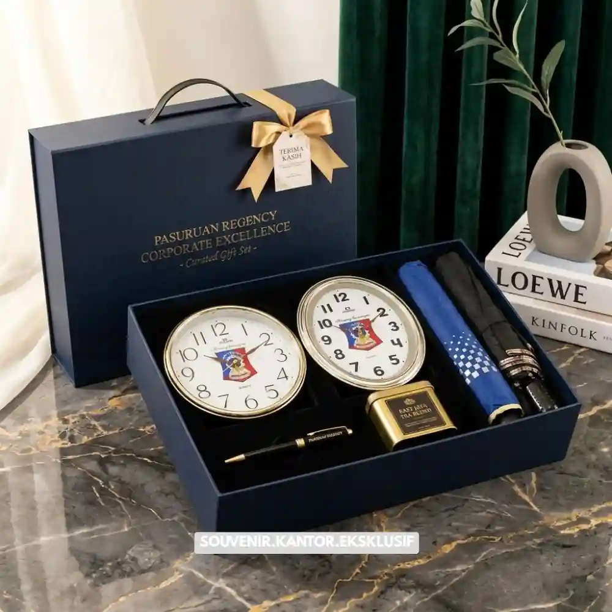

Daftar Isi
Souvenir kantor elegan untuk mitra bisnis adalah hadiah korporat dengan tampilan premium dan kemasan rapi yang berfungsi menjaga hubungan baik sekaligus memperkuat citra profesional perusahaan.
- Souvenir kantor elegan berfungsi sebagai representasi citra perusahaan di mata mitra bisnis.
- Pemilihan produk sebaiknya mempertimbangkan fungsi, daya tahan, dan kesan eksklusif.
- Kemasan dan detail seperti custom logo turut menentukan kesan profesional yang diterima mitra.
- Momen pemberian souvenir yang tepat memperkuat hubungan bisnis jangka panjang.
Ketika sebuah perusahaan menjalin kerja sama baru atau merayakan pencapaian bersama mitra bisnis, souvenir kantor elegan sering menjadi cara paling efektif untuk menyampaikan apresiasi tanpa terkesan berlebihan.
Souvenir yang tepat mampu memperkuat kesan profesional sekaligus menunjukkan bahwa perusahaan menghargai hubungan kerja sama yang telah terjalin. Karena itu, pemilihan souvenir tidak bisa dilakukan sembarangan, sebab setiap detail, mulai dari jenis produk hingga kemasan, ikut membentuk persepsi mitra terhadap perusahaan pengirim.
Souvenir kantor untuk mitra bisnis berbeda dengan hadiah personal pada umumnya. Produk yang dipilih perlu mencerminkan profesionalisme, memiliki fungsi yang relevan dengan kebutuhan penerima di lingkungan kerja, serta dikemas dengan standar yang konsisten dengan identitas merek perusahaan pengirim.
Mengapa Souvenir Kantor Perlu Tampil Elegan di Mata Mitra Bisnis?
Souvenir kantor yang tampil elegan membantu memperkuat citra profesional perusahaan sekaligus meninggalkan kesan positif yang bertahan lama di ingatan mitra bisnis penerima hadiah.
Kesan pertama sering kali terbentuk dari detail kecil, termasuk bagaimana sebuah hadiah dikemas dan disajikan. Souvenir yang terlihat asal-asalan dapat menimbulkan persepsi bahwa perusahaan kurang memperhatikan detail, sementara souvenir yang dikemas rapi dan elegan justru memperkuat citra perusahaan sebagai mitra kerja yang profesional dan dapat diandalkan.
Selain aspek visual, kualitas produk di dalam souvenir juga berperan penting. Mitra bisnis, terutama pada level manajerial atau direksi, cenderung lebih menghargai produk yang fungsional dan tahan lama dibanding produk sekali pakai yang mudah terlupakan.

Tampilan Souvenir Kantor Elegan
Jenis Produk yang Cocok Dijadikan Souvenir Kantor untuk Mitra Bisnis
Jenis produk yang paling sesuai dijadikan souvenir kantor untuk mitra bisnis meliputi peralatan kerja premium, produk gaya hidup fungsional, serta kombinasi makanan atau minuman berkualitas dalam kemasan eksklusif.
Peralatan Kerja Premium
Peralatan kerja seperti buku catatan berbahan kulit, alat tulis premium, atau organizer meja sering menjadi pilihan karena relevan dengan aktivitas sehari-hari mitra bisnis di lingkungan kantor. Produk jenis ini juga cenderung digunakan dalam jangka waktu lama sehingga logo perusahaan pengirim akan terus terlihat.
Produk Gaya Hidup Fungsional
Selain peralatan kerja, produk gaya hidup seperti tumbler premium, tas laptop, atau aksesoris perjalanan bisnis juga menjadi pilihan populer. Produk-produk ini memberikan kesan modern sekaligus tetap relevan dengan mobilitas tinggi para profesional.
Kombinasi Makanan dan Minuman Eksklusif
Untuk momen yang lebih hangat, kombinasi makanan ringan premium atau minuman khas dalam kemasan elegan tetap menjadi pilihan yang aman dan disukai banyak kalangan, terutama saat dikirim menjelang hari raya atau akhir tahun.
Bagaimana Memastikan Souvenir Tetap Mencerminkan Citra Perusahaan
Souvenir kantor dapat mencerminkan citra perusahaan secara konsisten melalui penyertaan logo, pemilihan warna kemasan yang selaras dengan identitas merek, serta kartu ucapan resmi dari perusahaan pengirim.
Detail seperti pencetakan logo pada kotak atau label kemasan menjadi elemen penting yang membedakan souvenir korporat dengan hadiah pribadi biasa. Selain logo, pemilihan warna kemasan yang selaras dengan identitas visual perusahaan turut memperkuat kesan bahwa souvenir tersebut memang dirancang khusus, bukan sekadar hadiah generik.
Kartu ucapan resmi yang menyertai souvenir juga berperan penting dalam menyampaikan pesan personal dari perusahaan kepada mitra bisnis. Pesan singkat yang tulus dan profesional dapat memperkuat hubungan kerja sama jauh lebih baik dibanding souvenir tanpa sentuhan personal sama sekali.

Solusi Souvenir Korporat Elegan dari Vendor Terpercaya
Kesimpulan
Souvenir kantor elegan untuk mitra bisnis bukan sekadar formalitas, melainkan representasi nyata dari profesionalisme dan apresiasi perusahaan terhadap hubungan kerja sama yang terjalin.
Pemilihan produk yang tepat, kemasan yang rapi, serta sentuhan personal melalui logo dan kartu ucapan dapat memperkuat kesan positif di mata mitra bisnis.
Jika perusahaan Anda ingin menghadirkan souvenir kantor yang benar-benar merepresentasikan citra profesional, percayakan kebutuhan tersebut kepada Maroon Souvenir melalui vendorsouvenir.web.id dan dapatkan paket souvenir korporat yang siap dikustomisasi sesuai identitas perusahaan Anda.
Butuh Bantuan Merancang Souvenir Kantor Elegan?
Tim ahli kami siap membantu Anda menyusun paket hadiah eksklusif yang menarik.
Pilihan barang akan disesuaikan dengan ketersediaan budget dan kebutuhan Anda.
Seluruh desain kemasan akan kami selaraskan dengan identitas visual perusahaan Anda.
Dapatkan penawaran harga terbaik untuk pesanan massal!
FAQ Souvenir Kantor Elegan
Apakah souvenir kantor untuk mitra bisnis harus selalu mahal?
Tidak selalu. Kesan elegan lebih ditentukan oleh kualitas kemasan dan kesesuaian produk dengan penerima, bukan semata-mata harga yang tinggi.
Apakah souvenir kantor bisa disesuaikan dengan identitas merek perusahaan?
Bisa, sebagian besar penyedia jasa menawarkan kustomisasi logo dan warna kemasan agar sesuai dengan identitas visual perusahaan pengirim.
Kapan waktu yang tepat memberikan souvenir kepada mitra bisnis?
Momen yang umum digunakan antara lain saat awal kerja sama, perayaan pencapaian bersama, hari raya, atau akhir tahun.
Maroon Souvenir
Partner Corporate Gift terpercaya di Indonesia. Berpengalaman melayani ratusan perusahaan sejak 2018.
Lihat Portofolio Kami